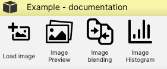
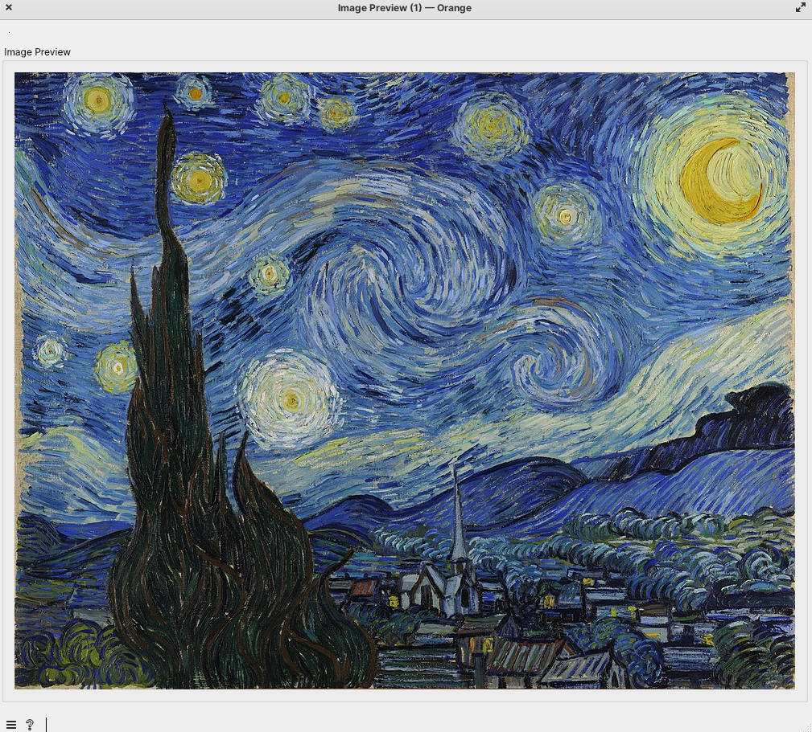

Blend Images Widget
Introduction
Now it’s time to create our third widget. In this widget, we will get two images on the Input, and we will create a blend. The fun part is that we will also implement a slider, which will allow us to change blend proportion.
Widget icon

We will use this icon to represent our Widget in the Orange Canvas.
Libraries used in this widget
import numpy as np from Orange.widgets import gui from orangewidget.widget import settings from Orange.widgets.settings import Setting from Orange.widgets.widget import OWWidget, Input, Output, Msg from AnyQt.QtWidgets import QLabel, QVBoxLayout, QWidget, QInputDialog, QFileDialog from PyQt5.QtGui import QImage, QPixmap
If you are wondering why we used libraries listed above, please check out the explanation here: Image Load Widget .
Metadata
When defining a new Orange widget, the metadata provides information. This section outlines key metadata attributes.
Widget Attributes
This is the code you will place inside your BlendImages(OWWidget) class, that inherits from OWWidget.
class BlendImages(OWWidget):
name = "Image blending"
description = "Blend uploaded images"
icon = "icons/blend.png"
priority = 120
keywords = ("data", "show", "read", "open", "image")
category = "Example - documentation"
Note
📌 We have priority set to 120 because we want to place this widget in the second position in our category.
Warning
⚠️ Icons specified in the icon attribute should be located in the correct path relative to the module where the widget is defined.
Registration with Orange
We run the orange-canvas command, after we should see this in the toolbox.
Since we specified the category, our widgets will be placed in that category - so far we have two widgets. The second
widget in the category should be shown now.

This widget looks a little different from the first widget. We see dots on both sides - which means we can connect

Declaring Inputs and Outputs
class Inputs:
image1 = Input("image1", np.ndarray, auto_summary=False)
image2 = Input("image2", np.ndarray, auto_summary=False)
class Outputs:
image = Output("image", np.ndarray, auto_summary=False)
Widget Settings
Tukaj bi potrebovala razlago, zakaj te elemente definiramo, ker ni nikjer razlozeno, samo uporabi se.
proportion = settings.Setting(50)
commitOnChange = settings.Setting(0)
want_main_area = False
buttons_area_orientation = False
Classes for Information, Warning and Error
Base widget has already implemented different classes that help us warn users. You can use them like this:
class Information(OWWidget.Information):
no_file_selected = Msg("No file selected")
no_file_saved = Msg("No file saved")
class Warning(OWWidget.Warning):
file_too_big = Msg("File too big")
file_upload = Msg("Read error:\n{}")
class Error(OWWidget.Error):
missing_file = Msg("No file found")
error = Msg("This is an error message")
unknown = Msg("Read error:\n{}")
Widget Initialization
def __init__(self):
super().__init__()
self.image_preview = ImageWidget(np.zeros((1, 1, 3), dtype=np.uint8))
Here we create an instance of the ImageWidget class and initializing it with a small black image (1x1 pixels with three color channels) filled with zeros. This serves as an placeholder image for the image_preview widget.
box = gui.widgetBox(self.controlArea, "")
box.layout().addWidget(self.image_preview)
ImageWidget class declaration
ImageWidget class is designed to display images in a Qt-based GUI. The class takes a NumPy array as input, converts it to a QImage, and displays it within a vertical box layout.
Warning
⚠️ Place this class above Show Image class
class ImageWidget(QWidget):
def __init__(self, image_array):
super().__init__()
self.label = QLabel(self)
self.init_ui()
# Set the initial image
self.update_image(image_array)
def init_ui(self):
layout = QVBoxLayout(self)
layout.addWidget(self.label)
self.setLayout(layout)
def update_image(self, new_image_array):
image = self.numpy_array_to_qimage(new_image_array)
pixmap = QPixmap.fromImage(image)
self.label.setPixmap(pixmap)
def numpy_array_to_qimage(self, array):
height, width, channel = array.shape
bytes_per_line = 3 * width
qimage = QImage(array.data, width, height, bytes_per_line, QImage.Format_RGB888)
return qimage
Handle loaded image file
@Inputs.image
def show_image(self, image_array):
self.image_preview.update_image(image_array)
The last part of the code is adding image preview to our layout. Now we can run and test the code!
Note
📌 Decorator @Inputs.image: handles incoming image data from the specified input signal
Warning
- ⚠️ Before running, make sure you add this to the bottom of the code.
if __name__ == "__main__": from Orange.widgets.utils.widgetpreview import WidgetPreview WidgetPreview(ShowImage).run() main_window = ShowImage() main_window.show()
Our first workflow
Here we create our first workflow. First we use the file load widget and connect it to image preview where we can see the image.

Now the best part, we can finally check how our image preview looks!
Test Your Code
Load image and connect it to your Image Preview widget. Leave the widgets connected and again click on load image, and pick different image. Check in your Image Preview widget if image was sucessfully loaded and changed. If yes, bravo, we followed good coding practices!
Conclusion
We are now ending the first half of the tutorial. I must warn you, the next two widgets are a bit more complex, but actually I had a lot more fun when I was creating them.
See also